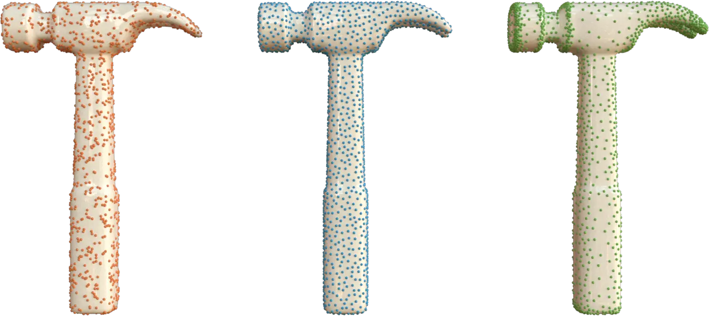

Sampling

The sampling module generates points on triangle mesh surfaces. It returns sample positions and source facet indices without modifying the input mesh.
sample_uniform: independent, area-uniform random points. The count is specified bynum_samples.sample_blue_noise: a more evenly spaced point set, optionally guided by a density field. The count is specified bynum_samples.sample_epsilon: spacing controlled by a local feature size (LFS) field. The count is computed fromepsilonand the LFS field.
Build and Input Requirements
lagrange_include_module(sampling)
target_link_libraries(my_target PRIVATE lagrange::sampling)
All three functions accept a lagrange::SurfaceMesh<Scalar, Index> containing triangles, in 2D or
3D. For 2D meshes, sampling requires positive facet area. If the input mesh is polygonal, first call
lagrange::triangulate_polygonal_facets.
The examples below use a unit square split into two triangles:
#include <lagrange/SurfaceMesh.h>
#include <cstdint>
using Scalar = double;
using Index = std::uint32_t;
lagrange::SurfaceMesh<Scalar, Index> mesh;
mesh.add_vertex({0, 0, 0});
mesh.add_vertex({1, 0, 0});
mesh.add_vertex({1, 1, 0});
mesh.add_vertex({0, 1, 0});
mesh.add_triangle(0, 1, 2);
mesh.add_triangle(0, 2, 3);
Set seed to reproduce a sampling run with the same mesh and options. Its default is 0.
Uniform Random Sampling
sample_uniform selects triangles in proportion to their area and draws points uniformly within
each selected triangle. Larger triangles receive more samples on average; this is not uniform
sampling over facet indices. Points are independent, so local clusters and gaps are expected.
#include <lagrange/sampling/sample_uniform.h>
lagrange::sampling::UniformSamplingOptions uniform_options;
uniform_options.num_samples = 1000;
uniform_options.seed = 42;
const auto uniform = lagrange::sampling::sample_uniform(mesh, uniform_options);
num_samples must be greater than zero. The C++ result contains:
samples: flat positions of sizenum_samples * mesh.get_dimension(), ordered asx0, y0, z0, x1, y1, z1, ...for a 3D mesh.facet_indices: one source triangle index per sample.
For sample i, coordinate d is uniform.samples[i * mesh.get_dimension() + d], and its source
triangle is uniform.facet_indices[i].
Blue-Noise Sampling
sample_blue_noise first generates an oversampled uniform point cloud, then eliminates crowded
points until the requested count remains. It uses the sample-elimination method of
Yuksel (2015).
#include <lagrange/sampling/sample_blue_noise.h>
lagrange::sampling::BlueNoiseSamplingOptions<Scalar, Index> blue_options;
blue_options.num_samples = 1000;
blue_options.seed = 42;
const auto blue = lagrange::sampling::sample_blue_noise(mesh, blue_options);
Without a density specification, the distribution has uniform density. The result contains
samples and facet_indices with the same layout as uniform sampling, plus one densities value
per sample. These are the original evaluated density values, not normalized values or the
bias-adjusted targets. With uniform density, all values are 1.
Density Attributes
Set density to the name of a mesh attribute to concentrate samples where its values are larger.
The attribute must be single-channel, per-vertex or per-facet, and have the same value type as the
mesh's Scalar. Per-facet density is constant within a triangle; per-vertex density is
barycentrically interpolated at each candidate position.
For example, assign higher density to the first triangle of the square:
#include <lagrange/Attribute.h>
#include <string_view>
const auto density_id = mesh.create_attribute<Scalar>(
"density",
lagrange::AttributeElement::Facet,
1,
lagrange::AttributeUsage::Scalar);
auto& density = mesh.ref_attribute<Scalar>(density_id);
density.ref(0) = 4.0;
density.ref(1) = 1.0;
blue_options.density = std::string_view("density");
const auto graded = lagrange::sampling::sample_blue_noise(mesh, blue_options);
Only relative density magnitudes matter: multiplying the field by a positive constant does not change the target distribution. The density does not specify the total sample count.
Evaluated densities must be finite and non-negative, and their sum over candidates must be
positive. Invalid values throw lagrange::sampling::DensityError, declared in
lagrange/sampling/DensityError.h. In C++, DensityError::status() distinguishes
DensityStatus::ContainsNonFiniteOrNan, ContainsNegative, and HasNonPositiveSum.
Density Callbacks (C++)
Instead of an attribute name, assign a DensityCallback. The callback receives a flat list of
candidate samples and their associated facet ids as input. It fills an output span of the same
size with one density per sample:
blue_options.density = [](lagrange::span<const Scalar> positions,
lagrange::span<const Index> facets,
lagrange::span<Scalar> output_densities) {
// This example mesh is 3D. Increase density toward x = 1.
for (size_t i = 0; i < facets.size(); ++i) {
output_densities[i] = 1.0 + 3.0 * positions[3 * i];
}
};
const auto procedural = lagrange::sampling::sample_blue_noise(mesh, blue_options);
The output density must satisfy the same density validity requirements as the density attributes version. The Python binding accepts density attributes, not callbacks.
Quality and Cost
| Option | Default | Effect and valid range |
|---|---|---|
num_samples |
0 |
Required positive output count |
bias |
0.0 |
Blend from prescribed density (0) toward uniform density (1); finite, in [0, 1] |
oversample_ratio |
8.0 |
Candidate count is ceil(oversample_ratio * num_samples); finite, at least 1 |
rmax_factor |
4.0 |
Scales the neighborhood used to compute elimination weights; finite and positive |
Increase oversample_ratio and rmax_factor together to reduce clumping at the cost of more
computation and memory. Increasing bias reduces density contrast and can also reduce clumping.
rmax_factor is not a guaranteed minimum sample separation, and a fixed-count blue-noise result
does not guarantee epsilon coverage.
Epsilon Sampling
sample_epsilon uses variable-radius dart throwing, with local radius
\(\epsilon\,\mathrm{lfs}(x)\), where \(\mathrm{lfs}(x)\) is the local feature size (LFS) at point
\(x\), and \(\epsilon\) is a positive scaling factor.
LFS measures the distance from \(x\) to the medial axis of the shape.
Narrow regions, such as the fingers of a human figure, have small LFS and therefore receive denser
sampling. Wide regions, such as the torso, have large LFS, resulting in coarser sampling.
Unlike blue-noise sampling, there is no target sample count.
To compute the LFS attribute, use lagrange::raycasting::compute_local_feature_size in the
raycasting module. Alternatively, any other distance-based field can replace LFS to guide sampling.
LFS is passed in as a single-channel, per-vertex mesh attribute. It must be strictly positive and
have the same value type as the mesh's Scalar type. LFS is linearly interpolated within each triangle.
Use a constant LFS field for fixed-radius sampling.
#include <lagrange/sampling/sample_epsilon.h>
#include <lagrange/raycasting/compute_local_feature_size.h>
auto lfs_id = lagrange::raycasting::compute_local_feature_size(mesh);
auto lfs_name = mesh.get_attribute_name(lfs_id);
auto epsilon = Scalar(0.5);
lagrange::sampling::EpsilonSamplingOptions<Scalar, Index> epsilon_options;
epsilon_options.ensure_vertex_coverage = true;
epsilon_options.compute_barycentric = true;
const auto epsilon_samples = lagrange::sampling::sample_epsilon(
mesh, lfs_name, epsilon, epsilon_options);
Epsilon sampling can be controlled via EpsilonSamplingOptions, which provides the following
options:
| Option | Default | Effect |
|---|---|---|
max_failed_attempts |
1000 |
Stop after this many consecutive rejected darts; must be positive |
compute_barycentric |
false |
Include three barycentric coordinates per sample |
ensure_vertex_coverage |
false |
Add uncovered facet-referenced vertices to the sample set |
Coverage is probabilistic
Finite dart throwing aims to put every surface point within its local epsilon * lfs radius of
a sample, but does not guarantee full surface coverage. ensure_vertex_coverage ensures that
facet-referenced vertices are covered; it does not guarantee coverage of triangle interiors or of
isolated vertices. Neighborhood distances are Euclidean, not geodesic, so nearby sheets
can influence each other's sampling.
The result contains flat samples and one facet_indices entry per accepted sample. The sample
count is facet_indices.size(). When requested, barycentric has 3 * facet_indices.size()
entries; otherwise it is empty. The three weights follow the vertex order of the source triangle
and can be used to interpolate per-vertex attributes at a sample.
Python
The Python API lives in lagrange.sampling. This runnable example uses the same square as the C++
examples:
import lagrange
import numpy as np
mesh = lagrange.SurfaceMesh()
mesh.vertices = np.array(
[[0.0, 0.0, 0.0], [1.0, 0.0, 0.0], [1.0, 1.0, 0.0], [0.0, 1.0, 0.0]],
dtype=np.float64,
)
mesh.facets = np.array([[0, 1, 2], [0, 2, 3]], dtype=np.uint32)
uniform_points, uniform_facets = lagrange.sampling.sample_uniform(
mesh, num_samples=1000, seed=42
)
mesh.create_attribute(
"density",
element=lagrange.AttributeElement.Facet,
usage=lagrange.AttributeUsage.Scalar,
initial_values=np.array([4.0, 1.0], dtype=np.float64),
)
blue_points, blue_facets, densities = lagrange.sampling.sample_blue_noise(
mesh, num_samples=1000, seed=42, density_attribute="density"
)
mesh.create_attribute(
"lfs",
element=lagrange.AttributeElement.Vertex,
usage=lagrange.AttributeUsage.Scalar,
initial_values=np.full(mesh.num_vertices, 0.1, dtype=np.float64),
)
epsilon_points, epsilon_facets, barycentric = lagrange.sampling.sample_epsilon(
mesh,
lfs_attribute="lfs",
epsilon=0.5,
seed=42,
compute_barycentric=True,
ensure_vertex_coverage=True,
)
# Reconstruct epsilon sample positions from their source triangles and weights.
triangles = mesh.vertices[mesh.facets[epsilon_facets]]
reconstructed = np.einsum("ij,ijk->ik", barycentric, triangles)
assert np.allclose(reconstructed, epsilon_points)
Python returns tuples rather than the C++ result structs:
| Function | Return tuple |
|---|---|
sample_uniform |
(samples, facet_indices) |
sample_blue_noise |
(samples, facet_indices, densities) |
sample_epsilon |
(samples, facet_indices, barycentric) |
For N samples, samples is an N x dimension float64 array and facet_indices is an N-entry
uint32 array. Blue-noise densities is an N-entry float64 array. Epsilon barycentric is an
N x 3 float64 array when requested, or an empty 0 x 3 array otherwise. Invalid blue-noise
densities raise lagrange.sampling.DensityError.
Python uses the same option names and defaults as C++, except that blue-noise density attributes
are selected with density_attribute="name". Omit it (or pass None) for uniform density.
API Reference
See the sampling module headers for complete C++ signatures and the mesh attribute guide for creating and accessing density and LFS fields.